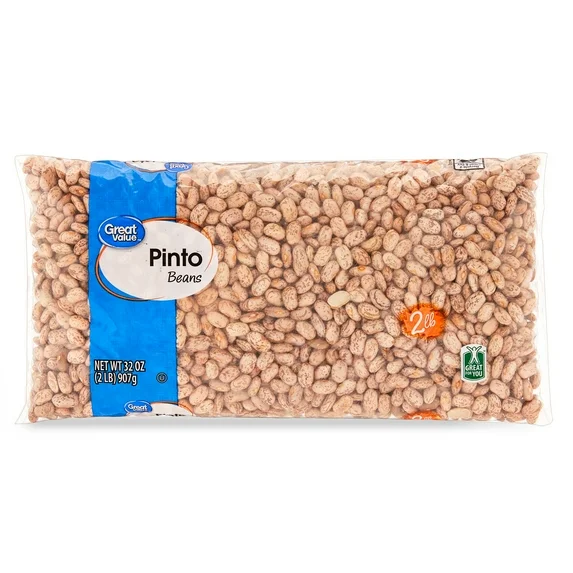

Fevereiro 2025
Meus amigos,
Este mês estamos focados em um suprimento de 2 meses de feijões e leguminosas. Só armazene se gostar de comida deliciosa! Existem várias formas de armazenar e usar feijões e leguminosas. Feijões são uma excelente fonte de proteína e são baratos, além de substitutos da carne. Feijões podem ser armazenados secos e durar décadas. Também estão disponíveis enlatados e em garrafas. Feijões desidratados podem ser reidratados rapidamente com água, por exemplo, feijão refrito.
Alguns exemplos de feijões armazenados incluem feijão enlatado, feijão refrito
 (disponível em latas, desidratado ou com feijão pinto seco). Há uma grande variedade de feijões e leguminosas para armazenar – incluindo feijão vermelho, feijão branco, feijão Anasazi, feijão preto, grão-de-bico, ervilhas partidas e soja.
É útil ter uma combinação de opções de acesso rápido – como enlatados ou desidratados – e feijões secos para armazenamento mais longo.
(disponível em latas, desidratado ou com feijão pinto seco). Há uma grande variedade de feijões e leguminosas para armazenar – incluindo feijão vermelho, feijão branco, feijão Anasazi, feijão preto, grão-de-bico, ervilhas partidas e soja.
É útil ter uma combinação de opções de acesso rápido – como enlatados ou desidratados – e feijões secos para armazenamento mais longo.
Diferentes opções de feijão incluem: Hummus feito com grão-de-bico enlatado; ervilhas verdes secas para sopa;
feijões pinto
 ou Anasazi para feijão refrito, seja enlatado ou desidratado, fácil de preparar em tortilhas; feijão branco para chili branco com frango; feijão vermelho para chili vermelho;
feijão preto
ou Anasazi para feijão refrito, seja enlatado ou desidratado, fácil de preparar em tortilhas; feijão branco para chili branco com frango; feijão vermelho para chili vermelho;
feijão preto
 para molhos; feijão vermelho e arroz, prato cajun tradicional; Dal, prato indiano saboroso feito com lentilhas vermelhas.
para molhos; feijão vermelho e arroz, prato cajun tradicional; Dal, prato indiano saboroso feito com lentilhas vermelhas.

 A quantidade recomendada de feijões por pessoa para um suprimento de 2 meses é 12 libras por pessoa. Se armazenar enlatados e secos, calcule que 4 latas equivalem a 1 libra de feijão seco.
Feijões são uma forma econômica de fornecer proteína para sua família continuamente.
Ter variedade de feijões e leguminosas traz mais sabor e variedade para as refeições familiares.
A quantidade recomendada de feijões por pessoa para um suprimento de 2 meses é 12 libras por pessoa. Se armazenar enlatados e secos, calcule que 4 latas equivalem a 1 libra de feijão seco.
Feijões são uma forma econômica de fornecer proteína para sua família continuamente.
Ter variedade de feijões e leguminosas traz mais sabor e variedade para as refeições familiares.
Como a maioria dos alimentos armazenados, feijões são melhores armazenados sem oxigênio e luz. O oxigênio pode causar rancidez nos óleos e a luz desbota a cor dos feijões. As melhores embalagens são latas #10 ou sacos tipo Mylar. Potes para conservas são bons para quantidades pequenas, desde que armazenados em local escuro. Absorvedores de oxigênio devem ser usados para remover o oxigênio e estender a vida útil. Um estudo BYU mostrou que amostras de feijão armazenadas por até 30 anos foram aprovadas em 80% por um painel de sabor.
Um filtro de água de qualidade é essencial para garantir água potável segura em emergências. Ter um filtro portátil confiável permite remover contaminantes e bactérias da água de fontes naturais. Isso ajuda a proteger sua saúde e a da sua família em situações em que água tratada não está disponível.